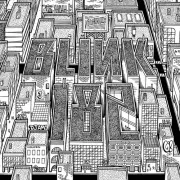

Blink-182 se formó en Poway, California, una zona residencial en las afueras de San Diego, en 1992. Tiempo después de graduarse de la secundaria en Ridgecrest, Mark Hoppus se mudó a San Diego para trabajar en una tienda de discos y asistir a la universidad. Por otra parte, a Tom DeLonge lo expulsaron de Poway High School por acudir borracho a un partido de básquetbol, y así se vio forzado a asistir a otra escuela local por un semestre. En Rancho Bernardo High School se hizo amigo de Kerry Key, también interesado en la música punk. Posteriormente, en agosto del 1992, Anne Hoppus (novia de Key) le presentó su hermano a DeLonge. Los dos tocaron durante horas en el garaje de DeLonge, mostrándose el uno al otro las canciones que habían escrito previamente; entre las primeras canciones que escribieron juntos se encuentra «Carousel», que más tarde sería parte del álbum debut de la banda, Cheshire Cat.
| Discos | Año | Canciones |
|---|---|---|
Cheshire Cat |
1995 | Carousel, M&M's, Fentoozler, Touchdown Boy, Strings, Peggy Sue, Sometimes, Does My Breath Smell?, Cacophony, TV, Toast and Bananas, Wasting Time, Romeo and Rebecca, Ben Wah Balls, Just About Done, Depends |
Dude Ranch |
1997 | Pathetic, Voyeur, Dammit, Boring, Dick Lips, Waggy, Enthused, Untitled, Apple Shampoo, Emo, Josie, A New Hope, Degenerate, Lemmings, I'm Sorry |
Enema of the State |
1999 | Dumpweed, Don't Leave Me, Aliens Exist, Going Away To College, What's My Age Again?, Dysentery Gary, Adam's Song, All The Small Things The Party song, Mutt, Wendy Clear, Anthem |
Take Off Your Pants and Jacket |
2001 | Anthem Part 2, Online Songs, First Date, Happy Holidays, You Bastard Story Of A Lonely Guy, The Rock Show, Stay Together For The Kids, Roller Coaster, Reckless Abandon, Everytime I Look For You, Give Me One Good Reason, Shut Up, Please Take Me Home |
Blink-182 |
2003 | Feeling This, Obvious, I Miss You, Violence, Stockholm Syndrome, Down, The Fallen Interlude, Go, Asthenia, Always, Easy Target, All Of This, Here's Your Letter, I'm Lost Without You |
|  Neighborhoods |
2011 | Ghost On The Dancefloor, Natives, Up All Night, After Midnight, Heart's All Gone, Wishing Well, Kaleidoscope, This Is Home, Mh 4.18.2011, Love Is Dangerous |
| California | 2016 | Cynical, Bored To Death, She's Out Of Her Mind, Los Angeles, Sober, Built This Pool, No Future, Home Is Such a Lonely Place, Kings of the Weekend, Teenage Satellites, Left Alone, Rabbit Hole, San Diego, The Only Thing That Matters, California, Brohemian Rhapsody |